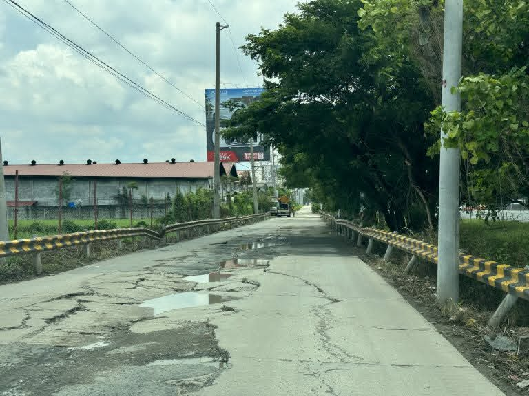
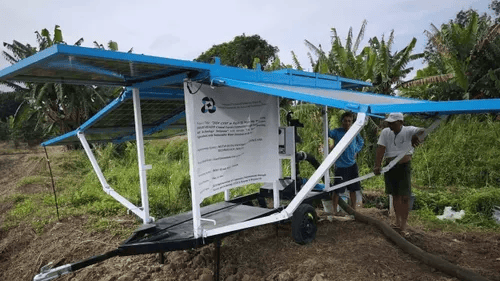

What Can We Do?
Solutions to Land Subsidence
Change starts at every level, from each household to the national government. Here are proven actions that work.
Section 1
Community Actions
Small changes in daily habits, especially water use, have a big impact when many families do them together.

Reduce Groundwater Pumping
Use water only as needed. Fix leaking pipes quickly. Collect rainwater for gardening and washing. Every liter saved keeps the soil in place.

Install Rainwater Collectors
Simple roof gutters and storage tanks can supply water for non-drinking uses. This reduces dependence on deep wells that drain the aquifer.

Plant Trees Along Riverbanks
Tree roots hold soil together and allow rainwater to slowly soak into the ground. Planting mangroves near coasts also protects against flooding.

Organize Community Education
Hold barangay meetings to discuss warning signs of subsidence. Share this website with neighbors. Informed families make safer choices.

Report Cracks and Sinking
Document cracks in walls, uneven floors, or flooded roads. Report them to your barangay official and use the form on our Interactive page.

Build a Household Emergency Plan
Know the evacuation routes from your barangay. Keep emergency supplies ready. Flooding risk is higher in areas that have already sunk.

Section 2
Government Initiatives
Government agencies have the authority to regulate water use and fund long-term solutions. These are key programs in place.

Groundwater Extraction Permits
The National Water Resources Board (NWRB) issues permits for deep wells and monitors extraction levels. Unauthorized wells can be sealed to protect the aquifer.

PHIVOLCS Hazard Mapping
The Philippine Institute of Volcanology and Seismology maps geological hazards. Their data helps local governments identify which areas need urgent attention.

Flood Control Infrastructure
The Department of Public Works and Highways (DPWH) builds dikes, drainage canals, and flood barriers. In Hagonoy, these protect communities from worsening floods linked to sinking land.

Land Use Zoning Updates
Local government units can update their Comprehensive Land Use Plans (CLUP) to restrict heavy construction in high-risk subsidence zones.

MGB Geological Surveys
The Mines and Geosciences Bureau (MGB) conducts field surveys to measure land movement. Their studies give communities scientific data to support requests for help.

Piped Water System Expansion
Expanding safe municipal water supply reduces families' need to dig private wells. Less well use means less groundwater withdrawal and slower sinking.

Section 3
Sustainable Practices
Long-term habits that protect the land and the water beneath it are essential for today's community and future generations.

Drip Irrigation for Farms
Drip irrigation delivers water directly to plant roots. It uses up to 50% less water than flood irrigation, reducing how much is pumped from the ground.

Restore Wetlands and Mangroves
Mangroves and wetlands act as natural sponges. They absorb floodwater, reduce erosion, and help replenish groundwater. Protecting existing ones is the first step.

Permeable Paving and Green Roofs
Concrete and asphalt stop rainwater from soaking into the ground. Permeable pavement lets water pass through and helps refill the aquifer naturally.

Solar-Powered Water Pumps
Solar pumps can collect surface or rainwater instead of groundwater. They run at low cost after installation and are ideal for barangay-level water systems.

School Curriculum on Land Science
Teaching students about geology and water cycles builds long-term environmental awareness. Young people who understand the problem grow into leaders who act on it.

Community-Led Land Monitoring
Barangay volunteers can track changes in ground level using simple tools such as measuring sticks at fixed points. Regular records reveal how fast an area is sinking.

Take Action
What You Can Do Today
Check off actions you can take right now. Every step matters.
0 of 8 done
See the Barangay Risk Map
Find out which barangays have high, moderate, or low vulnerability, and explore the interactive quiz and FAQ.